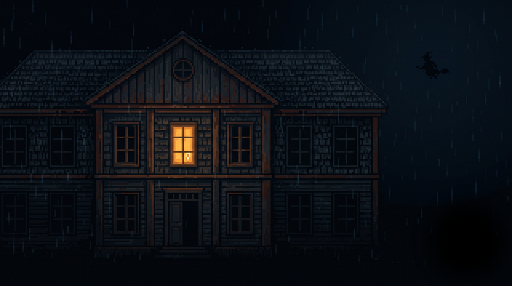
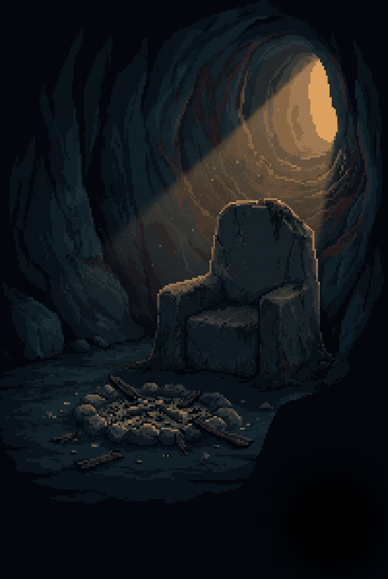
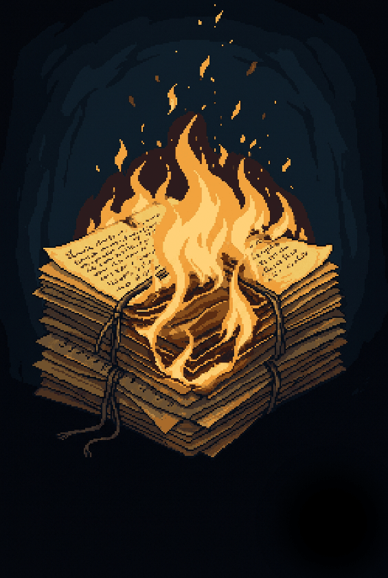

Recta Provincia · El Expediente
El juicio de Ancud de 1880
El Proceso de Ancud
El día que el Estado de Chile entró a la cueva: llevó a los brujos a juicio, y lo que era rumor se volvió expediente.
A. Marco del proceso
Portada del folleto (verbatim):
LOS BRUJOS DE CHILOÉ. Célebre Proceso del Juzgado de Ancud. Declaraciones de los reos.
Imprenta i Casa Editora de Ponce Hermanos. Calle de Nataniel Cox, número 65. Santiago de Chile. 1908.
Título de sección: Los brujos de Chiloé — Su verdadera historia. Un espediente judicial.
Marco procesal, párrafo de presentación (verbatim):
Pero llegó la época en que la autoridad de Chiloé descubrió todo, i la terrible sociedad fue llevada ante la justicia donde sus embustes i pamplinas no le sirvieron de nada. En efecto, el juez letrado de Ancud levantó un severo proceso a dichos brujos allá por Febrero de 1880.
Las declaraciones de los hechiceros mismos de esos hombres temibles i [¿sombríos?] convertidos en tímidas ovejas ante el juez, dan completa luz sobre las hazañas monstruosas de la sociedad titulada «La Recta Providencia» que reinaba secretamente con un personal disciplinado i numeroso.
Lo que se va a leer es un verdadero espediente cuyo orijinal existe en el juzgado de letras de Ancud.
En cada declaración se detallan las estravagancias maliciosas de que se valían los tales brujos para engañar a los ignorantes i en particular a los pobres indios.
B. Declaración de Mateo Coñuecar (Rei de Santiago — Tenaun)
En Ancud a veinte i seis de Marzo de mil ochocientos ochenta, el señor juez hizo ocurrir a la presencia judicial, a Mateo Coñuecar, el que bajo promesa de decir verdad espuso: Que es natural de Tenaun (*) en este departamento, casado, de setenta años, agricultor, i no sabe leer i escribir i nunca ha estado preso. Que ahora está por creérsele complicado en varios crímenes que se están averiguando.
Que cuando tenia cuarenta años i estando para morir su hermano Andrés Coñuecar, que tenia el titulo de «[¿Comandante?] de la Tierra» en la institución de hechiceros indíjenas que se conocen con el nombre de brujos, le aconsejó que entrara a esa institucion para defenderse de los demas, porque era cosa que le convenia i que no lo comprometía.
El aceptó i su mismo hermano lo llevó donde Juan Quinchepane que se titulaba tambien «Comandante de la Recta Provincia.» Su hermano hizo presente a éste de que llevaba al declarante porque trataba de entrar a esa institución i que si queria lo aceptaba, porque él tambien pronto iba a morir por la vejez en que se hallaba.
Quinchepane lo aceptó, porque dijo que le hacían falta hombres para el consejo. Ninguno mas estaba presente i fue en la misma casa de Quinchepane donde tuvo lugar su recibimiento. Esto se verificó de esta manera:
Le hicieron hacer la señal de la cruz i Quinchepane le interrogó: «¿Jura usted por indíjena?» El declarante contestó que «sí juraba.» En seguida le hicieron hacer la promesa de no decir nada de lo que viera, de no divulgar los secretos, de prestar consejo cuando lo exija i de cumplir estrictamente las ordenes que se le den, amenazándolo con perder la vida [¿en caso de faltar a alguna?] de estas promesas. Quedó así agregado a la dicha institucion, la cual se conoce entre ellos con el nombre de la «Recta Provincia,» i desde luego se le dió el titulo de Consejero.
Antes de continuar adelante e interrogado por el señor juez sobre el oríjen de esa asociacion, espuso: Que por la tradición i por habérselo oido a su padre i a otros mas, que ya son muertos, sabe que en un tiempo de que no se tiene noticia, pero ya en la dominacion española, llegó a Payos en un buque de esta nacion un individuo apellidado Moraleda, con el objeto de conseguir algunos naturales para llevar a la península. No consiguió ninguno en ese lugar, por cuya causa se vino a Tenaun, donde tampoco encontró indios que lo siguieran.
En ese punto se presentó Moraleda haciendo ver que era hechicero, trasformándose en pescado, lobo, palomo i en otros animales, mostrando por ello que por tal causa debian seguirlo los indios. Casualmente en el mismo punto habia una mujer llamada o apellidada Chillpila residente en Quetalco, () que tenia fama de hechicera i los mismos indios la buscaron para hacerla competir con Moraleda. Entre las varias pruebas que hizo ésta, consiguió dejar en seco el buque de Moraleda en el mismo punto donde se hallaba anclado, i despues ponerlo a flote. Moraleda con esto se dió por vencido i, en señal de reconocimiento, regaló a la Chillpila un libro de hechicerías para que enseñara a los demás indíjenas. Moraleda se retiró de ahí, recalando en Quicaví () como de paso, i dejando a este mismo lugar con el nombre de España i Lima.
La Chillpila llevó el libro a Quicaví para que aprendieran los indíjenas i de ahí se organizaron las asociaciones en que ahora figura el declarante. Cree si, que aun ántes de la llegada de Moraleda existian brujos en Chiloé, pero de la única de quien queda conocimiento por la tradición es de la ya nombrada Chillpila. Advierte tambien que es tradicion que la Sociedad que fundó esta mujer no tenia todo el carácter perverso que se le ha llegado a dar, pues en el tiempo trascurrido se han ido haciendo innovaciones, como ser las sentencias que se espiden para dar muerte o para hacer sufrir de otro modo a las personas. No tiene conocimiento de los individuos que han hecho esas innovaciones, i el declarante no ha llevado a cabo ninguna desde que ha recibido el puesto que tiene.
El libro que dejó Moraleda existe todavia i se han sucedido en tenerlo los jefes de la «Recta Provincia» que habian en Quicaví, de cuyo punto los indíjenas no permitian lo llevaran a ninguna parte. Ese libro lo tiene ahora el declarante i lo dejó encargado en Tenaun, a Benito Nancuante que se lo pidió para aprender la brujería. El libro es impreso i tiene tapas de cartón forradas en cuero. En el mismo Quicaví los indíjenas desde un tiempo mui remoto, pero que debe guardar cierta conformidad con la llegada de la Chillpila a Quicaví, construyeron una casa subterránea que todos la denominan con el nombre de la «Cueva de Quicaví».
Esta cueva se halla situada en una quebrada inmediata a la casa en que vivió el finado José Merimañ, de donde hai un camino para llegar a ella. De la casa donde vive Aurora Quinchem tambien parte otro camino que deja la cueva a la derecha como a distancia de cuarenta metros.
Esa habitación adentro está enmaderada, tiene una mesa, cuatro sillas principales i tres bancos de madera. Ahora veinte años i cuando era Rei José Merimañ, se le ordenó fuera a dicha cueva para llevarle carne a unos animales que habian dentro de ella. Cumplió la órden, llevándoles carne de un cabrito que degolló.
Merimañ lo acompañó i al llegar a la cueva, éste comenzó a dar unos saltos que acostumbran los brujos i en seguida abrió la puerta. Esta se hallaba cubierta con una capa de tierra i césped con pasto para ocultarla; despues se encontraba una chapa que tenia llave de alquimia. Se valió de esta para abrirla i luego vinieron de adentro dos seres completamente desfigurados que se parecía el uno a un chibato (porque tambien se arrastraba), el otro era un hombre desnudo i con barba i el pelo que le llegaba a la mitad del cuerpo era completamente blanco. A este último lo conocian con el nombre de «Ibunche» i a aquel con el de «Chibato». Este tambien tenia el pelo i la barba blancas i mui largas, i su cuerpo lo tenia cubierto de una especie de cerda que le habian hecho salir con la yerba Picochihuín que se halla en los «Traigunus» o saltos de agua, con la cual le hacían fricciones i tambien se la hacian beber, sacándole el zumo de las hojas. Ambos entónces aparentaban tener como cincuenta años, i desde la fundación de la cueva existían esos individuos, reemplazándolos por otros cuando ellos morian.
El medio como los adquirian era: se reunia el consejo i determinaban las personas que debian ser Ibunche i Chibato i aun cuando ellos no quisieran, los tomaban por la fuerza i los encerraban en la cueva. Ahí los acostumbraban a vivir como era la costumbre, sin permitir que salieran a ninguna parte i manteniéndolos con carne de chibato, de cabrito o de niños difuntos que robaban en el panteon para llevarles continuamente. La bebida que les daban era agua de picochihuín. Asi acostumbraban a esos individuos a desempeñar el papel que quisieran i les enseñaban a hacer unos saltos o brincos.
De esta manera permanecian encerrados i solo ya cuando estaban convencidos de que no se irian a ninguna parte i que se les amenazaba con la vida si se arrancaban, les daban de cuando en cuando permiso para que salieran de noche a divertirse. (Llama a esto el que estuvieran en libertad i que en la pampa dieran sus brincos i se pusieran a gritar como chibatos.) Tienen la creencia de que esos dos seres ya no son cristianos sino el diablo, por lo cual tambien nunca les llevan sino carne de cabro, que creen es del afecto de este último.
Dos veces no mas le llevó carne de cabrito al «Chibato» i al «Ibunche», a los cuales los vió en otra ocasion en que tuvieron consejo en la misma cueva José Merimañ, José Quinchipane i el declarante. Merimañ i Quinchepane trataban de quitar la vida a Eusebio Pinda en [¿Tuevigüe?] porque tenia muchos viveres i no les daba a ellos. El declarante se opuso a la determinacion que querian tomar i se retiró sin saber lo que acordarían, pero a los ocho dias falleció el espresado Pinda i no supo quien le daria muerte. El «Chibato» i el «Ibunche» estaban ahí entonces sin tomar parte en nada; los hacian colocar a la entrada. Desde entonces no los vió mas.
Merimañ falleció poco tiempo despues i entró a reemplazarlo José Chodil. A la muerte de este, le sucedió su mujer Aurora Quinchem, quien se mancomunó con Cristina Quinchem hasta hace un año en que Antonio Nauta, por comisión del Rei de las Españas (Payos) Juan Pedro Chiguai, los separaron del cargo i nombró en su lugar a Domingo Coñuecar i al declarante, los que aun no estaban confirmados por los pueblos. Aquí advierte que para cada nombramiento que hace el Rei, se reunen los cabildos para aprobarlo, i es solo entónces cuando todos les respetan sin dificultad sus órdenes.
El libro de Moraleda i la llave de la cueva se la habia entregado José Aro, que es reparador de la «Recta Provincia», i el cual las conservaba desde la muerte de Merimañ. El libro como lleva dicho, lo dejó en poder de Benito Nancuante.
A los tres dias de haberse recibido del nuevo puesto que tiene, ordenó a Miguel Raicagüin de Tenaun i al finado José Calbuyagüe que llevaran la llave i fueran a abrir la cueva. Volvieron diciéndole que no se podia abrir i que la puerta estaba atrancada por dentro. En vista de esto i creyéndose que no tenia facultad para romper la puerta, le previno a su pueblo que se reunieran para acordar lo conveniente. El Rei de las Españas ordenó tambien se hiciera esto, i estaban citándose con ese objeto cuando los descubrieron i los redujeron a prisión en que se hallan. La llave de la cueva dice la tenia oculta en un campanario, el cual se incendió hace poco tiempo i como era de alquimia se derritió con el fuego. No sabe que harian José Chodil, Aurora Quinchem i Cristina Quinchem, del Chibato i del Ibunche, pues nunca lo llevaron a la cueva e ignora si estarán vivos.
En tiempo de Merimañ, encima de la mesa de la cueva habían muchos papeles, tinta i plumas para escribir, valiéndose de velas para alumbrarse. Cuando se recibió donde Juan Quinchepane, éste le dijo que debía tener un Chayanco i un Macuñ i Chaquetilla. Llaman a lo primero una piedra cristalina que tambien designan con el nombre de mapa i que sirve para distinguir a los que son brujos. Ellos le dan este poder i el declarante ignora de donde los han adquirido sus compañeros que lo tienen. Lo segundo es una parte de la piel de los brujos que mueren i que los que quieren tenerla, la sacan en el panteon, a la izquierda del cuerpo en dirección del pecho hácia la barriga. Esa piel la curten con ciertas yerbas i en seguida los brujos se la cuelgan con unos cordones al lado izquierdo i con ella andan de noche produciendo una luz especial que los distingue. (Dice aquí que no sabe esplicar la razon de este fenómeno.)
Tres semanas ántes que los tomaran presos tuvieron una reunion en casa de Domingo Coñuecar, presidida por el Rei de las Españas, Juan Pedro Chiguai i asistieron algunos individuos de Chelin, () Manao () i Achao (*) que no los conoce i asimismo Pedro [¿Lebiureo?], Antonio Güenchucoi, Antonio Nauta, Antonio Coñuecar, Maria Runin i el declarante. La reunion tenia por objeto principal conseguir del Rei que abriera la cueva i como se vió que no quiso hacerlo, cada uno retiró los presentes que habia llevado (plata, jénero i otras especies) i se retiraron sin haber resuelto ninguna cosa.
Hace tres años recibió de José Maria Chiguai, rei anterior de las Españas i padre del actual, su titulo de Rei de Santiago (Tenaun), i ese titulo lo quemó porque no le dió importancia en razon de que no le entregaban el libro que ya tantas veces habia nombrado. Ultimamente se le volvió a dar el mismo nombramiento por Juan Pedro Chiguai i éste lo tiene oculto en una caja que tiene enterrada en su propia casa, cerca de donde dormia i debajo de un baúl.
Dentro de la misma caja tiene tambien tres sentencias que ha espedido, una contra Catalina Güenel de Tenaun, por demanda de Catalina Canto, porque aquella le habia quitado su marido. Dió la órden a Miguel Raicagüin para que diera muerte a la Güenel. A la semana siguiente falleció ésta i no sabe cómo Raicagüin le daria muerte. Raicagüin era brujo i servía como policial para cumplir las órdenes que se le dieran. Ese individuo tenia chaquetilla i chayanco en su misma casa. Catalina Canto pagó al declarante por la sentencia tres botellas de aguardiente, i este a Raicagüin un peso cincuenta centavos en jénero blanco para que ejecutara su órden.
Este hecho tuvo lugar ahora cuatro años. En la misma época i por demanda que le interpuso Juana Carimonei de que Juana Canto le habia levantado el testimonio de vivir ilícitamente con su marido i mediante el pago de cuatro varas de tocuyo, ordenó al mismo Raicagüin diera muerte a la espresada Canto, la que falleció a los dos o tres días i tampoco sabe de qué manera aquél la mataria. Hace presente aquí que para el cumplimiento de estas resoluciones habia ordenado lo hiciera Pedro Güichocoi, pero éste no quiso obedecer diciendo que no sabia el arte.
Agrega que poco ántes que lo tomaran preso habia ordenado a José Aro diera muerte a dos hijos de don Fabian Cárdenas, porque tenia quejas de los indíjenas de que este tenia muchos viveres i les cobraba mucho cuando les compraban. No dió a Aro ninguna medicina para cumplir su órden, pero el hecho es que los hijos de Cárdenas, llamados Francisco i José Maria Cárdenas, fallecieron como a los ocho dias despues. Ignora el remedio que les daria Aro, pues este conoce todas las medicinas i venenos.
Por Nicolás Coñuecar sabe que su mujer Micaela Tocol envenenó i mató a la madre de éste, Felipa Ininpare, dándole una dósis grande de zumo de Cilmai. Modifica en esta parte su declaración diciendo que el que le dijo esto fue Luis Coñuecar, padre de Nicolas, pero no le refirió otra cosa.
Se cree en su pueblo que Estevan Carimonei ha muerto con veneno a su suegro Pascual Carimonei, su suegra Juana Coyopai, su cuñado Marcos Carimonei i una cuñada de ocho años, cuyo nombre equivoca. Todas estas muertes tuvieron lugar sucesivamente i hace algunos años. Carimonei tenia disputa con la familia de su mujer por terrenos i por esto creen de que él mismo, sin órden de nadie, los haya envenenado. En Octubre o Noviembre del año próximo pasado i hallándose trabajando en Quenchí (*), en la máquina de don Miguel Monttet con Estevan Carimonei i Juan Chigüai, Carimonei envenenó al último por una cuestión de un chancho que tuvieron. Esto no lo vió i se lo oyó decir a la misma familia de Chigüai, quienes le dijeron que el cuerpo de éste habia quedado amoratado i hecho pedazos.
Refiere que él no sabe mas i que nunca ha tenido ni chaquetilla ni chayanco, porque habiendo muerto Merimañ, ante quien habia hecho el compromiso de tenerlos, se creyó no tenia la obligacion i por eso no se cuidó de tenerlos. Asegura que su finado hermano Andrés Coñuecar tenia todas estas cosas i al morir se las dejó a Justo [¿Peran?] de Cala, junto con otras yerbas, las cuales debe aun conservar en su poder.
Advierte que el chayanco lo designan tambien con el nombre de revisorio. Los hechiceros usan unos huesos que designan con el nombre de camahueto i los cuales sirven para restregarse con ellos cuando tienen algun dolor. Esos huesos segun es la tradición, provienen de un animal marino. Son bastante escasos i tienen algun valor. Lo mismo tambien emplean la tierra en que se convierten los cadáveres para quitar las hinchazones, usándola con agua del mar u orines i poniendola como cataplasma. La Chaquigua la emplean en infusión, en pequeña cantidad, para las lombrices i sirve también en cocimiento para la sarna, a donde se aplica igualmente en uso esterno sacando el zumo de la hoja en verde. Tomada en grande cantidad es veneno.
Se niega a dar por ahora mas esplicaciones. Con lo cual se suspendió esta dilijencia para continuarla cuando convenga i leida que fué, no firmó el reo por no saber. — Sánchez. — Goicolea, secretario.

«Volvieron diciéndole que no se podia abrir i que la puerta estaba atrancada por dentro.» — Mateo Coñuecar, 26 de marzo de 1880
C. Declaración de Aurora Quinchem (Reina de «arriba»)
En Ancud a veinte i siete de Marzo de mil ochocientos ochenta, el señor juez hizo ocurrir a la presencia judicial a Aurora Quinchem Agüil, quien bajo promesa de decir verdad espuso:
Que es natural de Quicaví, viuda, agricultora, no sabe su edad pero revela tener mas de cuarenta años, i no sabe leer ni escribir.
Que a la muerte de José Merimañ, se nombró a su finado marido, Juan José Chodil «Presidente sobre la Tierra», por el Rei de las Españas, José Maria Chiguai. Chodil alcanzó a estar como seis meses en su empleo i repentinamente falleció, atribuyendo ella su muerte a Micaela Tocol i a José Aro, quienes deben haberlo envenenado porque le tenian envidia del cargo que desempeñaba i porque decían que no sabia hacer nada en él.
Durante la vida de su marido no le vió ninguna cosa de brujeria, ni aun yerbas de ninguna clase.
A la muerte de su marido, Pascual Coñuecar que se titulaba «Juez componedor», nombró a la declarante i a Cristina Quinchen con el título de «Reyes de la Recta Provincia» de «arriba» con la obligacion de reparar, de dar consejo i de sentenciar cuando sea conveniente, amenazándola con la muerte si no lo hacia.
Mientras ha estado con ese empleo, don Julian Alvarez vino a verla para que sentenciara a Andrés Calbuyagüe por haber dado la muerte a su hijo que tenia, e igual cosa hizo el padre de Eujenio Chamia que la solicitó sentencia a una mujer que habia muerto al espresado Chamia. A uno i otro les dijo que haria lo que le pedían, pero ella no dió paso ninguno i actualmente están vivas las personas que se trata de darles muerte.
A causa de que ella no sentenciaba como querían, Estevan Carimonei i Domingo Coñuecar la querian mal i ellos le atropellaban sus facultades para hacer lo que querían.
La declarante da a conocer los siguientes remedios que usan los brujos:
Chayanco. — Previene que lo que llaman chayanco para conocer los brujos, es una tapa de botella de vidrio, o a lo ménos es cosa que se le parece.
Colmillo de Lobo. — El colmillo de lobo lo usan para las almorranas i lo calientan hasta que se pueda aguantar.
Tonina. — Por el finado Domingo Calbuyagüe sabe que para la enfermedad de la locura, usan con agua bendita la carne quemada en polvo de cahuel o tonina.
Camahueto. — El camahueto es hueso que los entendidos recojen en los rios i lo emplean en las dislocaciones o quebraduras. Lo raspan i con huevo i harina de trigo hacen un emplasto que lo ponen en la parte afectada con papel colado, pero ántes dando un tajo a donde está la herida.
Hueñoto. — La piedra lipe i el [¿cardenillo?] le dan tambien el nombre de hueñoto.
Macuñ. — Le dan luz al macuñ por medio de un depósito de aceite humano que hacen en medio de él, a semejanza de un candil, prendiéndole fuego despues.
Copuca [¿millahuinhuin?]. — Copuca millahuinhuin son dos piedras de rio que les dan la virtud de que frotándolas en agua i regando con esta a las papas que van a sembrar, es mui grande la produccion que se obtiene.
[¿Cuchin?]. — El cachin, terrible enfermedad, que en Chiloé es comun i que se ignora su oríjen, se forma de una clase de hormigas que hai en los palos secos i podridos. Los brujos recojen esas hormigas i se las largan a quienes quieren hacer sufrir. Se cura esta enfermedad haciendo un emplasto de las yerbas [¿Ibircun?], [¿Alefuein?], deo i agua salada, lavando las heridas con esta ultima.
Bocado. — Bocado es un remedio que usan los brujos para causar a los hombres una enfermedad que les hincha la barriga, que les da mucha sed i muchos vómitos, sin que les permita pasar nada en el estómago i que los aniquila por completo hasta que llegan a morir. Ese remedio lo hacen de lagartijas i sapos que secan al sol i despues en una pequeña narigada la ponen en polvo en alguna bebida que se quiere dar a la victima. Suelen llegar a restablecerse de esta enfermedad aplicando las mismas lagartijas i sapos tostados con sal, tambien en una pequeña narigada i tomando esto con agua bendita. Asi en una semana puede restablecerse.
[¿Puñalada?]. — La puñalada la curan con sal, ciprés i la cavalonga en mui pequeña cantidad tostadas i en seguida poniéndolas a hervir en una cantidad de agua, que es la que se toma.
Espina de [¿mechai?]. — La espina de mechai es venenosa i forma tumores en la parte del cuerpo a donde penetra. Se le cura con parches de ajenjo, yerba buena, poleo e [¿ibercun?] mezcladas con agua salada.
Miembros recojidos. — Cuando algun miembro del cuerpo se recoje, hacen fricciones de yerba buena, ajenjo, poleo, deo e [¿ibircun?] i hueso de venado en polvo. Todo esto se mezcla i con el liquido que salga se hace la curación.
Todos estos remedios i enfermedades los sabe por habérselo dicho el finado Domingo Calbuyagüe, pero ella nunca ha hecho uso de ellos i no sabe el éxito que produzcan.
Nunca ha ido a la cueva, pero Pascual Coñuecar le dijo que se retirara de la casa en que vivia, porque en el punto en que estaba era un lugar malo i ella siempre sentia mucha bulla a los alrededores. Esto la hizo creer que por ahí estaba dicha cueva, i para quedar tranquila se mudó a otra parte, hácia la montaña.
Sabe que Micaela Tocol es afamada curandera i se dice que ha hecho muchas muertes. Hace cinco años hubo una reunion en su casa con el objeto de averiguar el archivo, al cual concurrió José Parancan, pero José Aro se negó a entregarlo diciendo que el finado Merimañ se lo habia encargado i que él lo entregaria cuando sea grande un hijo que este dejó. No sabe en que consistia el archivo. José Parancan se titulaba «Reparador de [¿Payos?]».
Cuando se hizo cargo Mateo Coñuecar del cargo que tiene, ya no se mezcló en nada e ignora lo que haya pasado despues.
Diciendo que nunca ha estado presa, se ratificó en lo espuesto, leida que fué, i no firmó por no saber. — Sánchez. — Goicolea, secretario.
D. Sentencia (juez Beytía, 2 de marzo de 1881)
Encabezado de la sección: Última declaración i sentencia del Juez.
Ignacio Millalonco, Secretario de Domingo Coñuecar, declaró ante el juez que en la casa de éste habia visto reunidas hasta 60 personas i al Rei Juan Pedro Chiguai, todos alrededor de una mesa «i no cuidó de observar lo que estarían haciendo».
Segun la sentencia de 2 de Marzo de 1881, del juez Beytía, en el juicio de brujos se ha seguido esta causa por el delito de asociación ilícita contra los comprometidos en la sociedad de los brujos, que estos llaman Recta Provincia. De las declaraciones i de la lectura de los papeles encontrados resulta que esa institucion existe desde tiempos remotos i cuenta con un número excesivo de afiliados, todos los que a su incorporación se les confiere un empleo u ocupacion que aceptan bajo la obligacion de sijilo i obediencia.
Por los nombres de los lugares para que han sido nombrados se sabe que han hecho una sub-división territorial bajo nombres i linderos que ellos conocen.
Este cuerpo de empleados tan numeroso como el de sus afiliados, lo forman un Rei i Reina, (jefes Supremos), Presidentes i Vice, Intendentes, Secretarios, Comandantes, Reparadores i Médicos.
Estos ademas del poder misto i omnímodo que representan, cuentan con el sobrenatural de la adivinacion, con el que tambien los creen investidos los sencillos habitantes de las pequeñas poblaciones donde habitualmente cometen sus [¿brujerías?], hasta haber así obtenido el que aquellos ocurran a su presencia en demanda de saber quiénes son los autores de sus enfermedades o muertes que les ocurren en sus familias, solicitando a la vez un castigo. De aquí procede la facilidad que tienen para conseguir estafarlos, cobrándoles honorarios por notificaciones, sentencias, etc., a fin de atraerlos i hacerlos servir como ajentes de la institucion.
Reos condenados (verbatim; nombre, edad, cargo, pena):
Mateo Coñuecar, de 70 años, no sabe leer ni escribir; hace 30 años que se incorporó en dicha institucion sirviendo primero como consejero i despues como Rei de Santiago (Tenaun); oyó demandas i recibió honorarios; fue condenado a tres años de prision.
Aurora Quinchem, de 40 años, confiesa ser Reina de «arriba» de la Recta Provincia; tuvo reuniones en su casa; se abstuvo de dar sentencias de muerte; condenada a 541 dias de prision.
Cristino Quinchem, 61 años, Vice-Presidente de arriba de la Recta Provincia; condenado a 541 dias de prisión.
Domingo Coñuecar, 54 años, Reparador sobre la tierra, la misma sentencia.
Cierre editorial del folleto (verbatim):
La Recta Provincia, o sea la institución de los brujos, habia existido en Chiloé desde tiempos antiquísimos; era tolerada porque se ignoraban sus malas tendencias i se le creía mas bien una institución piadosa con fines humanitarios. Pero las investigaciones prolijas hechas por el activo Juez, vinieron a demostrar, ante las autoridades i el pueblo asombrado, el cúmulo de maldades i [¿crímenes?] cometidos por la famosa asociación.
La sentencia dictada por el juzgado i la condenacion de los reos que aparecían mas culpables, trajo por consecuencia la desaparicion de los demas brujos. Sin embargo, despues de algun tiempo, cuando creyeron que todo se habia olvidado, principiaron a dar señales de vida en otros lugares e islas de aquellas rejiones. Pero nunca, al ménos, no se ha oido decir, han vuelto a asociarse i a nombrar jefes como en la Recta Provincia. Han llevado hasta hoi una vida oscura i lánguida, pero siempre preocupados de hacer sus estafas i crímenes por medio de procedimientos secretos i vulgares. Los brujos existirán siempre, mientras existan los indios supersticiosos i el bajo pueblo sin educacion.
Nota de los editores (verbatim — pieza clave para la cadena de custodia):
Nota de los editores. — No se ha escapado a nosotros, las innumerables faltas de construccion i estilo de que adolece la redaccion del proceso, que no hemos correjido, para que quede fiel al orijinal.

«Los archivos originales del juicio se quemaron; quedaron solo crónicas de diarios, revistas folclóricas y la tradición oral. El fuego se llevó los papeles; la memoria del pueblo guardó el resto.» — variante «Los archivos quemados», corpus del Grimorio
El Epílogo — la absolución
Lo que el folleto de 1908 no cuenta: el proceso siguió
En segunda instancia la Corte de Apelaciones de Concepción revocó la primera sentencia y absolvió a todos los imputados: aquellos jueces consideraron que la organización no atentaba contra el orden social, las buenas costumbres, las personas o las propiedades, así como tampoco consideraron que la ley indígena en la que se basaba aquella organización contradecía la ley chilena.
— Catepillan (2019), p. 93.
Los nueve condenados en primera instancia, según los archivos penales
Mateo Coñuecar, de 70 años; Aurora Quinchen, de 40 años; Cristino Quinchen, de 61 años; Desiderio Quinchen, de 54 años; Domingo Coñuecar, de 54 años; Juan Ignacio Uribe, de entre 50 y 60 años; Juan Esteban Carimonei, de 26 años; Santiago Rain, de 98 años, y José María Chiguai, de 90 años, fueron condenados a penas de tres años.
— Catepillan (2019), p. 93, nota 29 («Sentencia de primera instancia contra Mateo Coñuecar»).
Las cifras del proceso divergen entre fuentes — se muestran todas; ninguna se zanja
- «Alrededor de 80 personas tuvieron que testificar y apelar por su inocencia», en la persecución decidida por el intendente Luis Martiniano Rodríguez — Ampuero (2016), p. 66.
- «No menos de 54 personas fueron encarceladas en el curso de la investigación» — Catepillan (2019), p. 92.
- Nueve condenados, y «exclusivamente por el delito de asociación ilícita» — Catepillan (2019), p. 93.
- «Doce personas fueron condenadas» — corpus del Grimorio, según Los brujos de Chiloé: documentos de un proceso judicial (2018).
- Las penas también divergen: tres años para los nueve según los archivos penales — Catepillan (2019), p. 93, n. 29—; el folleto de 1908 registra tres años para Mateo Coñuecar y 541 días para Aurora Quinchem y Cristino Quinchem (Bloque D de este expediente).
El desenlace
La organización quedó igualmente desarticulada. El corpus del Grimorio lo registra así: «la organización se fragmentó y muchos brujos huyeron al norte». La ironía histórica queda a la vista: el Estado montó la persecución, encarceló a decenas, condenó a nueve — y su propia justicia los absolvió a todos. La Recta Provincia no cayó por la sentencia: cayó por el proceso.
Transcripción íntegra, política de fidelidad y aparato crítico: fuentes/proceso-ancud-1880.md (documento maestro del repositorio) · Fuente digitalizada: Memoria Chilena, Biblioteca Nacional de Chile, MC0033459.
Lo que era rumor se volvió expediente.
El Grimorio del Archipiélago